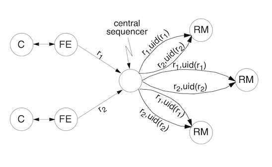
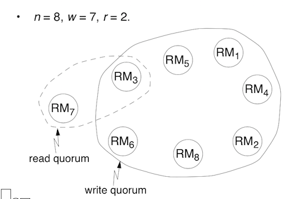
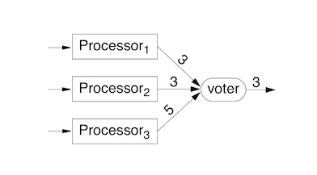

Saker som är transparenta för användaren - alltså ej visas utan hanteras av det distribuerade systemet internt.
Client-server
Fördelar:
Nackdelar:
Peer-to-peer
Fördelar:
Nackdelar:
Synkrona system
Funktioner:
Konsekvenser:
Nackdel:
Asynkrona system
Många distribuerade systemen är asynkrona. Detta innebär:
Konsekvenser:
I praktiken används timeouts för asynkrona system - men man behöver ta till fler verktyg för att garantera consistent state (ej ha duplikerade meddelanden, duplikerad exekvering av samma operationer etc).
Garanterar olika händelsers relation till varandra - dock ej att de sker i exakt ordning tidsmässigt. Använder oftast vektorklockor (flerdimensionella Lamportklockor!)
Kan utföras m h a en centraliserad klocka/räknare, alternativt via distribuerad överenskommelse. Garanterar inte kausalitet (att event händer i rätt ordning). Alla system har samma räkne-id på varenda request.

En replica manager (RM) nummrerar sina requests enligt:
$$ cuid(RM_{i},r) = max(SEEN_{i},ACCEPT_{i}) + 1 + i/N $$
En front end (FE) får sedan requests från alla RMs och numrerar dessa enligt:
$$ uid(r) = max_{i inom (1 ...N)}(cuid(RM_{i},r))$$
Man kan aldrig ställa bak en klocka - bara sakta ner den.
Algoritmer

Sätt tiden genom tt beräkna:
$$T_{maxRec} - T_{minRec} = (T_{1} - T_{0}) - 2t_{min} ± \frac{(T_{1} - T_{0})}{2} - t_{min} $$
Där $t_{min}$ är lika med minsta överföringstiden för mediet mellan tidsserver och lokala enheten.
Utan token
Med token
Tänkbara:
Läs från vilken som - skriv till samtliga kopior. Snabbt för läsning - inte så snabbt att skriva.
Läs från en - skriv till alla tillgängliga. Efter fel måste en instans först synda med en annan instans innan den kan acceptera requests från användare igen.
En primär kopia som man använder förskrämningar - resten utför läsoperationer (och läser in senaste versionen från primary copy).

r = nr samtidiga som säger läs
w = nr samtidiga som säger write
n = antal totala noder
För att undvika två samtidiga skrivningar -> w > n/2
För att se till att alla som läser får senaste kopian -> r + w > n
Vid läsning
Vid skrivning
System med lågt r -> snabba läsningar
System med högre r -> snabba skrivningar
På så sätt kan man anpassa systemet efter last.
Hårdvaruredundans Mjukvaruredundans Informationsredundans - felkoder / redundant dataöverföring Tidsredundans - extra tid för att kunna utföra redundanta/felkontrollerande operationer
Typer av fel:
Bakåt - spara tillstånd och återgå till detta. Framåt - hårdavaru eller mjukvaruredundsns.
För att åstadkomma distribuerad överenskommelse med k-redundans (k st felaktiga enheter) krävs 3k+1 enheter.

Det finns olika typer:
Ofta använder man en central koordinator. För att välja koordinator:

The best case: Processen med näst högst ID upptäcker att koordinatorn är borta -> den kan direkt utse sig själv som koordinator och gå skicka ut n-2 stycken coord-meddelanden.
Theworstcase: Processen med lägst ID upptäcker att koordinatorn är bort och skickar ut valmeddelanden -> den skickar ut n-1 valmeddelanden som i sin tur skickar ut meddelanden uppåt -> O(n^2) meddelanden totalt

Som majority voting men det vinnande alternativet behöver inte ha majoritet - bara flest röster.
Object adapter
Objektadaptern är det primära interfacet mellan serverobjektet och ORB. Denna håller koll på referensräkning och livstid för objekt och dess referenser. Objektens referenser genereras utifrån specifikationen av Interface Definition Language som skapas av programmeraren.
Ett interface som specificerar API:t som klienter kan använda för att utföra operationer på/med hjälp av objekt.

Statisk invokering är då mjukvaran vid kompileringstillfället är medveten om vilka interface servern exponerar. Detta ger ett litet overhead.
Dynamisk invokering sker då klienten vid kompileringstillfället ej vet om vilka interface servern exponerar. Detta ger ett stort overhead då eventuella metoder som kallas vid run-time först måste traversera till servern och sedan ge en respons till klienten.
Alternativ 1: "Åtminstone en gång-semantik"
The client’s communication module sends repeated requests and waits until the server reboots or it is rebound to a new machine; when it finally receives a reply, it forwards it to the client. When the client got an answer, the RMI has been carried out at least one time, but possibly more.
Alternativ 2: "Åtminstone en gång-semantik"
The client’s communication module gives up and immediately reports the failure to the client (e.g. by raising an exception)
Alternative 3: "Max en gång-semantik"
This is what we would like to have (and what we could achieve for lost messages): the RMI has been carried out exactly one time. However this cannot be guaranteed, in general, for the situation of server crashes.